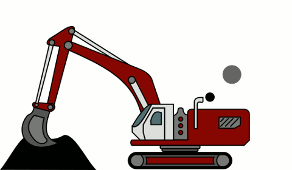

Некоторые вещи требуют чуть больше времени и чуть меньше лени.
Например, написание пары строк разметки; да, это тоже работа!
Может быть не совсем того же рода, что таскать кирпичи
на объекте в подчинении у прораба-пидораса, но все же.
Наши разберутся, а wиндознутым оптимально для отображения в
Netscape Navigator 9 при разрешении экрана 1024х768
но html5 у вас все равно не будет